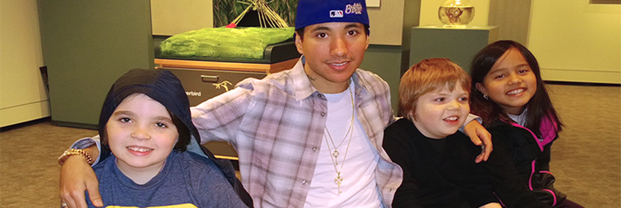

About Emilio
Emilio's professional history has revolved around children. He first started his work with kids at a drop in art center called Plaster Fun Time in MA. This was a very hands-on and kid focused business. The main impetus was to have children express themselves creatively through their own art style with no boundaries. It allowed Emilio to encourage out of the box thinking, and on the fly conversations with many different and diverse children. Kids gravitated toward his upbeat and joyful demeanor. Most kids are inhibited creatively and never really get the spotlight shined on them in such a positive and friendly way.
Kids began to request that Emilio host their birthday parties and a loyal following was born. He was able to reach so many children at one time that way. Many of the children would become enamored with his exuberance. Parents saw the delight on their children's faces and asked Emilio to babysit.
To differentiate himself with the myriad amount of after school sitters Emilio became a Family Management Coordinator. More than a simple baby sitter, or nanny; he would dedicate all his efforts to enriching the lives of his clients' children and also the clients themselves. After all, a family is made up of more than just children.